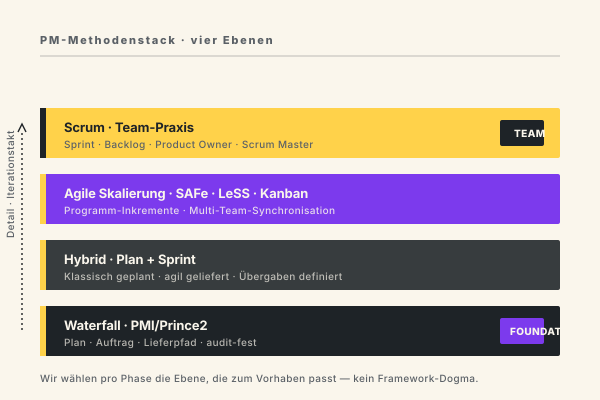
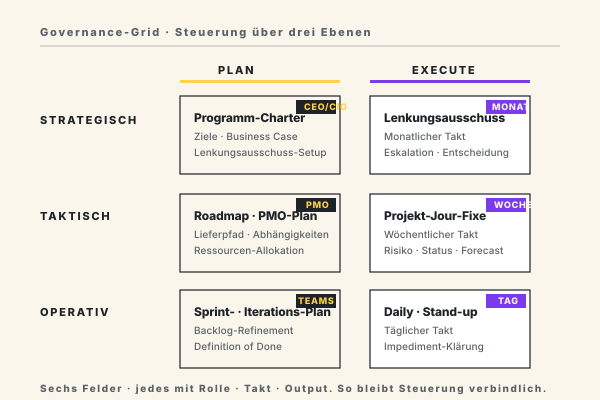
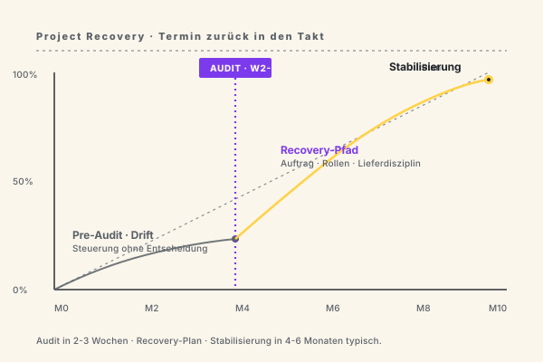

IT-Projekte › wieder im Takt.
Wenn Steuerung, Rollen und Lieferpfad schwimmen, bringen wir Struktur in die laufende Umsetzung. Klassisches, agiles oder hybrides Projektmanagement — inklusive Interim-PM, Scrum-Beratung und Programm-Management für IT-Vorhaben im deutschen Mittelstand und Konzernumfeld.
Die wenigsten IT-Projekte scheitern an der Technologie.
Sie scheitern an unklaren Zielen, schwacher Steuerung, fehlenden Rollen und einer Lieferung, die mit dem Tagesgeschäft kollidiert. Wir kennen die Muster — und sie wiederholen sich quer durch Branchen.
Wann braucht ein Unternehmen externes Projektmanagement. Drei Auslöser sehen wir wiederkehrend. Erstens. Ein strategisch wichtiges Vorhaben überfordert die interne PM-Kapazität — der Linien-Verantwortliche hat weder die Zeit noch die methodische Breite. Zweitens. Ein Programm ist bereits entgleist und braucht eine neue Steuerung, die nicht in den bisherigen Eskalations-Schleifen verfangen ist. Drittens. Eine Transformation kreuzt mehrere Fachbereiche und IT-Domänen — und niemand intern hat die Autorität, quer zu allen Beteiligten verbindlich zu liefern. In allen drei Fällen ist externe Erfahrung kein Luxus, sondern die schnellste Route zurück in den Takt. Wir bringen die fehlende Rolle, die methodische Disziplin und den Liefer-Druck — ohne in interne Politik verstrickt zu sein.
Auftrag und Scope sind unscharf
Charter und Business Case stehen, aber Auftraggeber, Erfolgskriterien und Veränderungs-Disziplin sind unklar. Scope-Creep ist die Folge — und am Ende sind Budget und Zeit weg.
Steuerung ohne echte Entscheidung
Jour Fixe, Reports, Lenkungsausschuss — aber niemand entscheidet wirklich. Eskalationen versanden in Folge-Terminen. Die Steuerung dokumentiert, statt zu steuern.
Agile Begrifflichkeit ohne agile Wirkung
Stand-Up-Termine, Sprint-Reviews, Jira-Boards — aber Anforderungen kommen weiter im Wasserfall. Hybrid funktioniert, scheitert aber an unklaren Übergaben zwischen Plan- und Liefer-Welt.
Lieferpfad ohne realistische Kapazität
Roadmap zeigt 12 parallele Streams, aber dieselben Schlüssel-Ressourcen sind überall drin. Liefer-Realismus fehlt — und damit das Vertrauen in die Planung.
Vier Leistungsfelder — von Interim-PM bis Programm-Recovery.
Wir liefern Erfahrung mit Verantwortung: als Interim-Projektmanager, externe Steuerung von Großprogrammen, Scrum-Coaches in skalierter Agilität oder als Recovery-Team für entgleiste Vorhaben.
Was macht ein Projektmanagement-Berater im Alltag konkret. Anders als ein klassischer Berater, der Konzepte schreibt und übergibt, übernimmt unsere PM-Beratung den Steuerungsstand selbst. Im Mandat heißt das. Wir setzen den Auftrag mit dem Auftraggeber neu auf, klären Rollen und Eskalations-Logik, etablieren einen Steuerungs-Rhythmus, schaffen einen verlässlichen Risiko- und Abhängigkeits-Stand, übernehmen die Stakeholder-Kommunikation und sind erste Anlaufstelle für Liefer-Streams. Wir liefern Ergebnisse, keine Folien. Pro Woche heißt das. Ein Steuerungsmeeting mit dem Auftraggeber. Mehrere Workstream-Syncs mit den Lieferteams. Ein laufend gepflegter Risiko-Stand. Ein wöchentliches Status-Update an die Geschäftsleitung. Klassisches PM kombiniert mit Sprint-Logik, wenn agile Teams beteiligt sind. Das Mandat ist eng — und es trägt Verantwortung.
Interim Projektmanagement
Sie brauchen kurzfristig einen erfahrenen PM für ein kritisches Vorhaben — von 6 Wochen bis 18 Monaten. Wir steigen ein, übernehmen Verantwortung und übergeben sauber an Ihre Linie.
Agile Coaching & Scrum-Beratung
Scrum-Einführung, Skalierung mit SAFe oder LeSS, Coaching von Product Ownern und Scrum Mastern. Wir bringen agile Praxis dahin, wo sie wirklich Wirkung zeigt — nicht nur ins Ritual.
Programm- & Multiprojekt-Management
Komplexe Programme mit 5–20 Teilprojekten, parallelen Lieferstrecken und unterschiedlichen Stakeholder-Hierarchien. PMO-Aufbau, Steuerungsdisziplin, Risiko- und Abhängigkeits-Management.
Project Recovery & Audit
Ein Projekt ist entgleist — Termin verfehlt, Budget überschritten, Stimmung schlecht. Wir auditieren in 2–3 Wochen, definieren den Recovery-Pfad und steuern bis zur Stabilisierung.
Fünf Phasen — vom Audit bis zur sauberen Übergabe.
Sie entscheiden nach jeder Phase, ob wir weitermachen. Schrittweise Verbindlichkeit, schrittweise Wertschöpfung.
Welche Methoden gibt es im Projektmanagement — und wann passt welche. Vier Ebenen prägen die DACH-Praxis. Klassisches Wasserfall-PM nach PMBOK oder Prince2 — passt bei stabilen Anforderungen, langem Lieferpfad und harten Compliance-Vorgaben. Hybrid — klassisch geplant, agil geliefert — ist heute der Realitäts-Modus für die meisten Mittelstand- und Konzern-Programme. Skalierte Agilität nach SAFe oder LeSS — passt bei mehreren parallelen Teams an einem gemeinsamen Produkt. Scrum oder Kanban auf Team-Ebene — passt bei Produkt-Entwicklung mit klarem Produkt-Backlog und schnellem Markt-Feedback. Wir wählen pro Phase die Ebene, die zum Vorhaben passt. Kein Framework-Dogma. Wer agil verkauft, wo klassisch geliefert werden muss, schadet dem Programm. Wer wasserfall plant, wo iterativ entwickelt wird, ebenso.

Projekt-Audit
Auftrag, Scope, Stakeholder, Steuerung, Lieferpfad, Risiken. Output: 10-seitiger Audit-Bericht mit Befunden und Recovery- bzw. Stabilisierungs-Empfehlungen.
Steuerungs-Setup
Aufgesetzte Governance: Auftrag (re-)formuliert, Rollen geklärt, Steuerungs-Rhythmus, Eskalations-Logik, Stakeholder-Plan, Reporting-Set.
Operative Steuerung
Wir übernehmen die Projektleitung interim — mit voller Verantwortung für Termin, Budget, Qualität und Stakeholder-Management. Wöchentlicher Takt.
Skalierung & Programm-Aufbau
Wenn aus dem Projekt ein Programm wird oder weitere Teilprojekte ins Boot kommen: PMO-Aufbau, Multi-Projekt-Steuerung, Programm-Governance.
Übergabe an Ihre Linie
Saubere Übergabe an Ihre interne Projektleitung. Dokumentation, Coaching der Nachfolgerin, optional 3–6 Monate Sparring-Phase.
IT-Vorhaben, in denen wir wiederkehrend beraten und steuern.
Die Auswahl der Vorhaben, die unsere PM-Berater am häufigsten begleiten. Gemeinsamer Nenner: hohe Komplexität, viele Stakeholder, IT-Anteil signifikant — klassisch, agil oder hybrid.
Was kostet Projektmanagement-Beratung in DACH. Die ehrliche Antwort. Es kommt auf Senior-Level, Branche und Verantwortungs-Umfang an. Für Interim-Projektmanager mit 10+ Jahren Praxis liegt der Tagessatz typischerweise zwischen 1.400 und 1.900 Euro. Für Programm-Verantwortung mit mehreren Teilprojekten und Lenkungsausschuss-Anbindung höher — 1.800 bis 2.400 Euro sind im DAX-Konzern-Umfeld üblich. Für eine reine Audit-Leistung über 2 Wochen rechnen wir typischerweise zwischen 22.000 und 32.000 Euro pauschal. Für längere Mandate ab 6 Monaten ist der Tagessatz verhandelbar. Mittelständische Mandanten können in vielen Fällen BAFA-Förderung für Beratungsleistung in Anspruch nehmen — wir prüfen das vor Mandats-Beginn. Was die Kosten relativiert. Ein typisches IT-Projekt mit 6 Monaten Verzug kostet ein mittelständisches Unternehmen mehr an interner Bindung und entgangenem Geschäfts-Nutzen als ein Recovery-Mandat über 4 Monate.
ERP-Einführung & -Upgrade
S/4HANA-Migration, ERP-Konsolidierung, Carve-Out. Wir steuern den Programm-Bogen aus PM-Sicht — nicht aus SAP-Modul-Sicht.
Cloud-Migration & Modernisierung
Lift-and-Shift, Re-Platforming, Modernisierung von Legacy-Anwendungen. Wir bringen Liefer-Realismus in Cloud-Programme.
IT Carve-Out & Post-Merger-Integration
IT-Trennung oder -Integration nach M&A. Hoher Termindruck, harte Cut-Over-Logik, viele parallele Workstreams.
Digitalisierungs-Programme
Quer-funktionale Programme mit mehreren IT- und Fachbereichs-Workstreams. PMO-Aufbau und Steuerungs-Rhythmus zentral.
Software-Produktentwicklung
Agile Produktentwicklung mit Scrum oder Kanban. Interim Product Owner, Backlog-Coaching, Release-Planung.
Regulatorische Programme
BAIT, MaRisk, DORA, NIS2. Hohe Dokumentations-Anforderung, harte Termine, regulatorische Audits.
Rechenzentrums- & Infrastruktur-Vorhaben
Migrationen, Konsolidierungen, Sicherheits-Programme. Klassisches PM mit hoher technischer Tiefe.
Daten- & Analytics-Plattformen
Aufbau von Data Platforms, BI-Modernisierung, MDM-Programme. Iterativ mit klaren Lieferphasen.
Wo wir IT-Programme wiederkehrend steuern.
Projektmuster unterscheiden sich erheblich nach Branche. Wir bringen die Erfahrung aus den Branchen mit, die wir am häufigsten begleiten.
Quer durch alle Branchen gilt eine Konstante. Steuerung muss auf drei Ebenen verbindlich sein — strategisch beim Lenkungsausschuss im Monatstakt, taktisch beim PMO im Wochentakt, operativ in den Teams im Tagestakt. Auf jeder Ebene muss klar sein. Wer entscheidet. Wer liefert. Wer berichtet. Wenn eine dieser drei Ebenen fehlt oder vermischt wird, kippt die Steuerungslogik. Genau hier setzt unser Governance-Setup an. Wir definieren pro Ebene den Rollen-Inhaber, den Output und den Eskalations-Pfad — damit Entscheidungen dort fallen, wo sie hingehören, und nicht auf der falschen Ebene versickern.

Banken & Versicherungen
Kernbanken-Modernisierung, Regulatorik-Programme (BAIT, MaRisk, DORA), Vertriebs-IT. Hoher Dokumentationsbedarf, harte regulatorische Termine, viele Stakeholder.
Produzierende Industrie & Maschinenbau
ERP-Rollout, MES-Einführung, Industrie-4.0-Programme. Wir bringen den Lieferdisziplin-Anker in Programme, die sonst zwischen IT und Werk hin- und herwandern.
Automotive & Zulieferer
PLM, Produktentwicklungs-Vorhaben, Software-Defined Vehicle. Komplexe Multi-Tier-Programme mit OEM-Schnittstellen.
Öffentlicher Sektor & Verwaltung
Digitalisierungs-Programme (OZG, Registermodernisierung), Fachverfahrens-Einführung. Politische Stakeholder, lange Vergabezyklen — wir bringen Steuerungs-Realismus.
Pharma & Medizintechnik
GxP-konforme Validierungs-Programme, MDR-Vorhaben, Track-and-Trace. Hohe Validierungs-Last und QM-Anbindung.
Energie & Versorger
Smart-Meter-Rollout, Netz-Modernisierung, regulatorische Berichts-Programme. Standardisierte Massen-Roll-outs mit harten Skalen-Anforderungen.
Was unsere PM-Beratung von der Standardware unterscheidet.
Recovery ist der häufigste Einstiegs-Anlass — und der härteste Test für PM-Beratung. Der typische Verlauf. Ein Programm driftet über mehrere Monate. Status-Berichte zeigen grün, faktisch wächst die Lücke zum Plan. Irgendwann wird der Auftraggeber unruhig. Genau hier setzen wir an. Audit in zwei bis drei Wochen. Konkreter Recovery-Plan. Übernahme der Steuerung. Stabilisierung in vier bis sechs Monaten. Die Kurve unten zeigt das Muster — flacher Drift vor dem Audit, danach klare Steigung zurück zum Plan-Ziel.

Interim mit echter Verantwortung
Unsere Projektmanager übernehmen Verantwortung — Termin, Budget, Qualität, Stakeholder. Keine reinen Beobachter, kein Folien-PM. Wir tragen die Konsequenz.
Methodisch undogmatisch
Wasserfall, Scrum, SAFe, Kanban, Hybrid — wir kombinieren je nach Problem. Wir verkaufen kein einzelnes Framework. Wir wählen das, was zu Ihrem Vorhaben passt.
Recovery-Erfahrung
Mehr als die Hälfte unserer Mandate beginnt mit „läuft schief". Wir wissen, wie man entgleiste Vorhaben in 4–6 Wochen wieder steuerbar macht.
Senior — kein Junior auf Lerncharge
Unsere PMs haben durchschnittlich 12+ Jahre Projektpraxis. Sie übernehmen, weil sie Erfahrung haben, nicht weil sie sie sammeln wollen.
Wir bauen Ihre interne PM-Fähigkeit auf
Wir wollen keine Dauer-Mandate. Wir trainieren Ihre internen PMs, hinterlassen Methodik und Governance. Übergabe ist Teil des Vorgehens, nicht ein Nachgedanke.
Anbieter- und Tool-unabhängig
Wir empfehlen kein Jira, kein Microsoft Project, keine Plattform aus Eigeninteresse. Wir arbeiten mit dem Tool, das in Ihrem Stack vorhanden ist und passt.
Drei Standards, die unsere PM-Beratung verbindlich anwendet.
Wir arbeiten mit etablierten PM-Standards und Zertifizierungen — damit Ergebnisse audit-fest sind und Ihre interne PM-Community sie nachvollziehen kann.
Standards sind kein Selbstzweck. Sie geben Ihrer Organisation eine gemeinsame Sprache für Auftrag, Risiko und Liefer-Disziplin. Ihre interne PM-Community findet sich in PMBOK-Begriffen wieder. Ihr Auditor erwartet Prince2- oder IPMA-konforme Dokumentation. Ihre agilen Teams arbeiten gegen das Scrum-Regelwerk. Und Ihr Lenkungsausschuss braucht ein Reporting, das er ohne Übersetzung versteht. Unsere Senior-PMs sind in mehreren dieser Welten zertifiziert — PMP, Prince2 Practitioner, Scrum.org, SAFe — und wechseln im Mandat zwischen den Sprachen, je nachdem, mit wem sie sprechen.
PMI · PMP & Prince2
Klassisches Projektmanagement nach PMBOK und Prince2. Unsere Senior-PMs sind zertifiziert. Verbindliche Sprache für Auftrag, Risiko, Stakeholder, Lieferdisziplin.
SAFe · Scrum.org · Kanban
Agile Skalierung nach SAFe, Scrum.org-zertifizierte Scrum Master und Product Owner, Kanban-Praxis. Wir kombinieren agile Frameworks je nach Skalierung und Stakeholder-Landschaft.
IPMA & GPM
Europäischer PM-Standard. Anschluss an deutsche PM-Community, GPM-Mitgliedschaft, Anbindung an die übliche PM-Sprache im DACH-Mittelstand.
Fragen, die in den ersten Gesprächen immer kommen.
Wie viel kostet ein Interim-Projektmanager?
Wie schnell können Sie einen Interim-PM stellen?
Können Sie auch Programm-Management übernehmen?
Was ist der Unterschied zwischen agil und klassisch — und was sollen wir wählen?
Unsere Scrum-Einführung läuft nicht. Was hilft?
Übernehmen Sie auch entgleiste Projekte?
Können Sie auch nur einen Workshop oder ein Audit machen?
Arbeiten Sie auch mit kleinen Unternehmen?
Projektmanagement › wieder in den Takt bringen.
Der erste Schritt ist ein Erstgespräch von 30–45 Minuten. Wir klären Ihre Ausgangslage, die wichtigsten Engpässe und ob CX der richtige Partner ist. Wenn nicht, verweisen wir auf jemanden, der besser passt.
Erstgespräch anfragen →